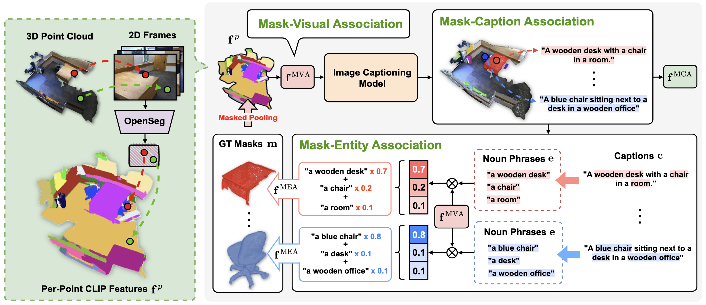
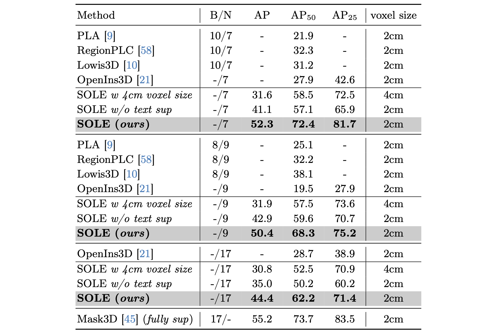
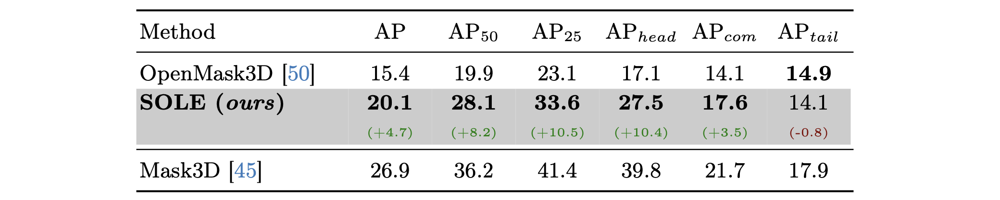
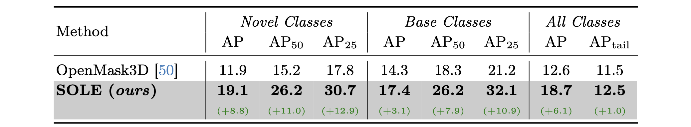
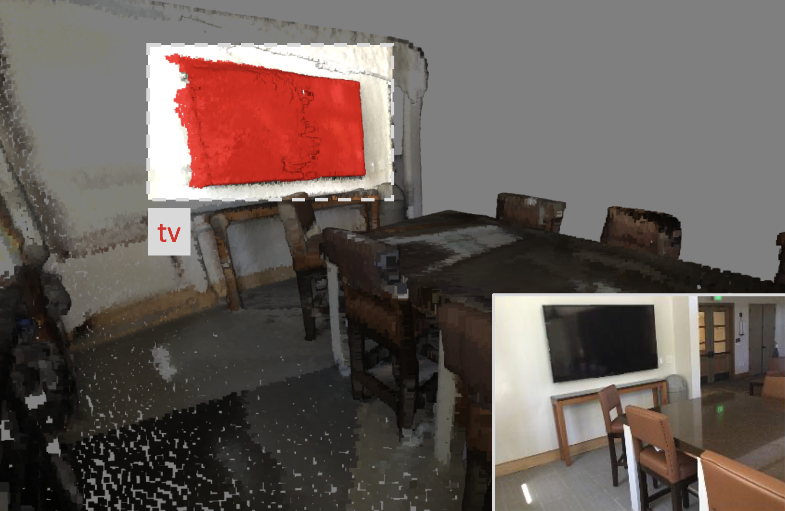
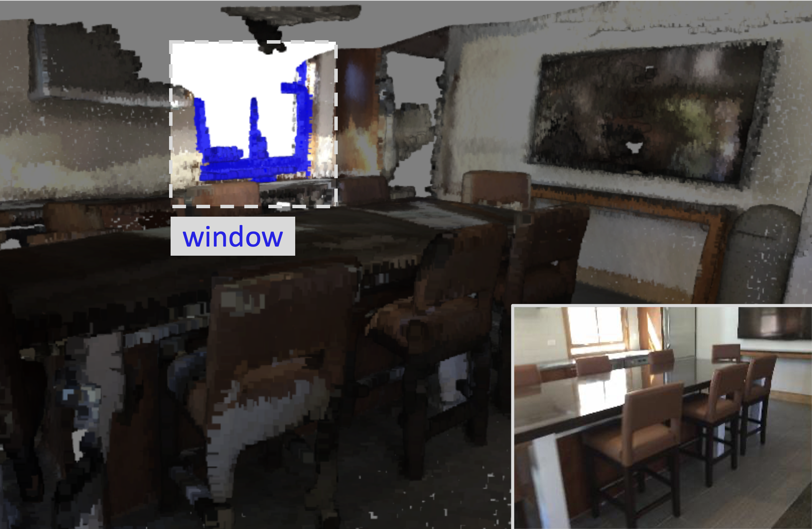
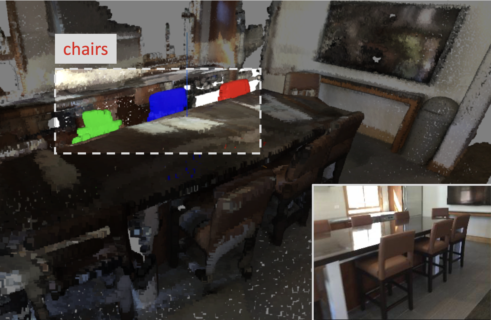
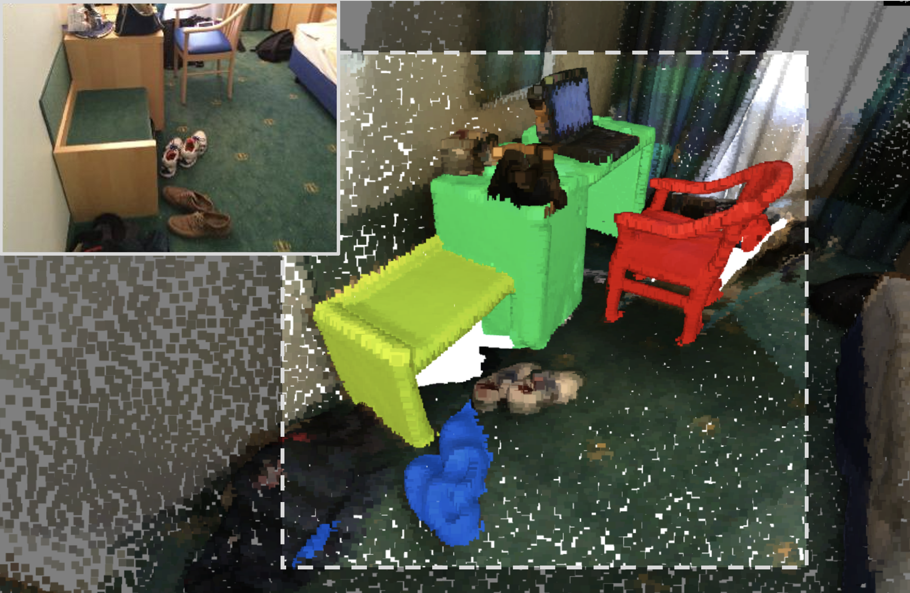
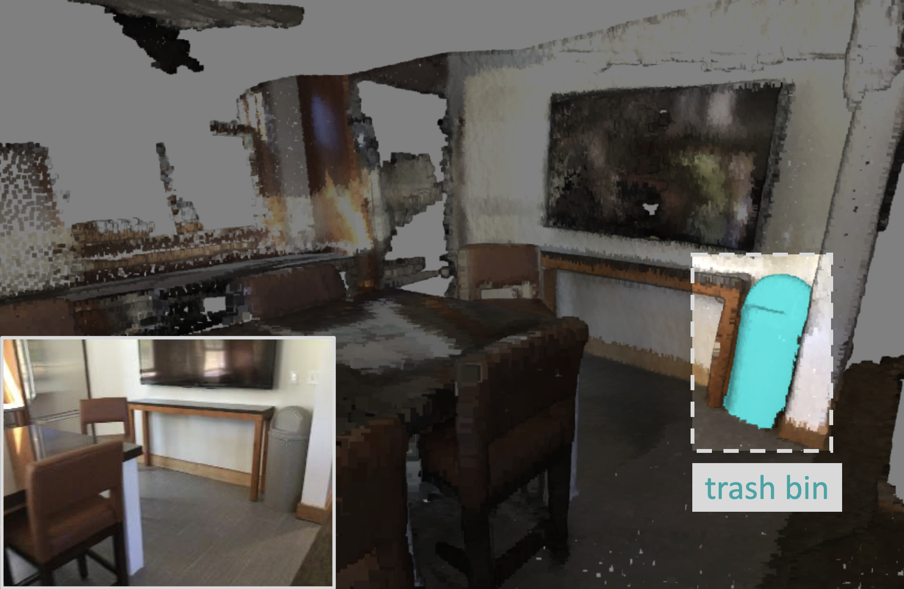
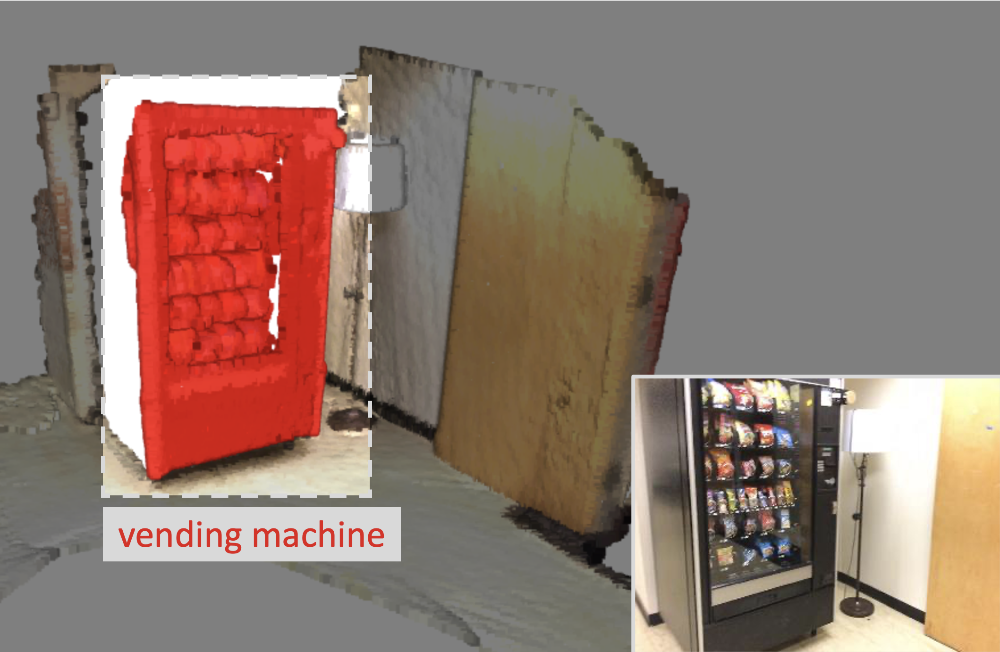

Event stream
Overall Framework
Overall framework of SOLE. SOLE is built on transformer-based instance segmentation model with multimodal adaptations. For model architecture, backbone features are integrated with per-point CLIP features and subsequently fed into the cross-modality decoder (CMD). CMD aggregates the point-wise features and textual features into the instance queries, finally segmenting the instances, which are supervised by multimodal associations. During inference, predicted mask features are combined with the per-point CLIP features, enhancing the open-vocabulary performance.

Three types of multimodal association instance. For each ground truth instance mask, we first pool the per-point CLIP features to obtain Mask-Visual Association $\mathbf{f}^{\mathrm{MVA}}$. Subsequently, $\mathbf{f}^{\mathrm{MVA}}$ is fed into CLIP space captioning model to generate caption and corresponding textual feature $\mathbf{f}^{\mathrm{MCA}}$ for each mask, termed as Mask-Caption Association. Finally, noun phrases are extracted from mask caption and the embeddings of them are aggregated via multimodal attention to get Mask-Entity Association $\mathbf{f}^{\mathrm{MEA}}$. The three multimodal associations are used for supervising SOLE to acquire the ability to segment 3D objects with free-form language instructions.

Quantitative Results
The comparison of closed-set 3D instance segmentation setting on ScanNetv2. SOLE is compared with class-split methods, mask-training methods and the full-supervised counterpart (upper bound). SOLE outperforms all the OV-DIS methods and achieves competitive results with the fully-supervised model.

The comparison of closed-set 3D instance segmentation setting on ScanNet200. SOLE is compared with OpenMask3D on the overall segmentation performance and on each subset. SOLE significantly outperforms OpenMask3D on five out of the six evaluation metrics.

The comparison of hierarchical open-set 3D instance segmentation setting on ScanNetv2→ScanNet200. SOLE is compared with OpenMask3D on both base and novel classes and achieves the best results.

The comparison of open-set 3D instance segmentation setting on ScanNet200→Replica. SOLE outperforms OpenMask3D on all the evaluation metrics.
Qualitative results
Our SOLE demonstrates open-vocabulary capability by effectively responding to free-form language queries, including visual questions, attributes description and functional description.

I want to watch movie.

I wanna see outside.

Chairs near by the window.

Brown furnitures.

Throwing away the garbage.

I'm hungry.
BibTeX
@article{park2021nerfies,
author = {Park, Keunhong and Sinha, Utkarsh and Barron, Jonathan T. and Bouaziz, Sofien and Goldman, Dan B and Seitz, Steven M. and Martin-Brualla, Ricardo},
title = {Nerfies: Deformable Neural Radiance Fields},
journal = {ICCV},
year = {2021},
}